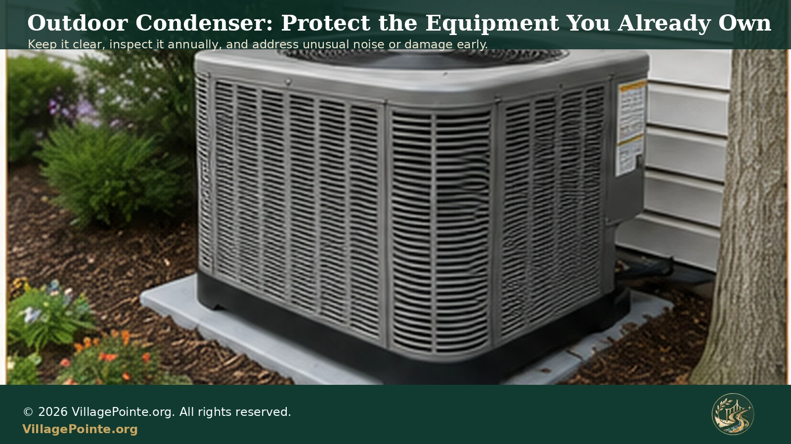
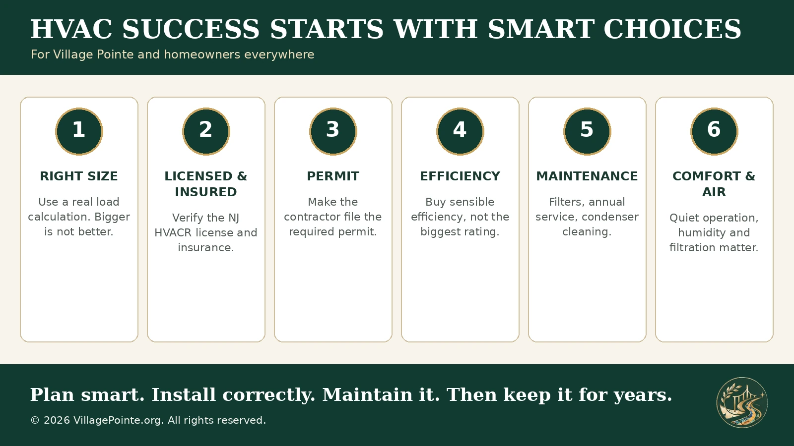

1. Before replacing the HVAC, check the house
Do not begin with equipment catalogs. Begin with the home. A new HVAC system can compensate for some building problems, but it cannot make bad insulation, air leakage, blocked returns or leaking ducts disappear. ENERGY STAR advises homeowners to evaluate the home and insist on a quality installation rather than simply swapping boxes.
For PSE&G customers, this is a good time to use the utility's current energy-efficiency tools. PSE&G offers a free online Home Energy Assessment, and its Quick Home Energy Check-up program provides expert energy advice and may include no-cost efficiency measures. Its Whole Home Energy Solutions program can go farther, examining air leakage, insulation, heating and cooling efficiency, hot-water systems, indoor-air concerns and other whole-house factors. Program availability and eligibility change, so verify the current offering before scheduling.
A pre-replacement assessment can identify inexpensive work that may let the new system be smaller, run less often or deliver more even comfort. Ask about:
- air leakage around doors, windows and penetrations;
- attic and wall insulation where applicable;
- duct leakage, disconnected sections or crushed flex duct;
- blocked supply registers or return grilles;
- rooms that have always been too hot or too cold;
- condensate drainage and signs of past water leakage;
- thermostat location and whether direct sun, drafts or nearby heat sources affect its reading.
2. Right size beats bigger size
One of the most persistent HVAC mistakes is buying extra capacity "just to be safe." Bigger equipment costs more initially and can cost more to operate. ENERGY STAR specifically warns that oversized equipment may cycle too frequently, reduce comfort and shorten equipment life. In cooling mode, short run times can also reduce moisture removal, leaving a home cool but clammy.
Ask the contractor what load calculation was used. The industry-standard residential method is commonly called Manual J. The contractor should consider square footage, windows, orientation, insulation, air leakage, occupancy and other real characteristics of the home rather than relying only on the tonnage of the old unit or a rough square-foot rule.
Village Pointe homes are relatively compact and generally use one central zone. That makes right-sizing particularly important. A system designed for a much larger detached house is not an upgrade merely because it has a bigger compressor or furnace input. The goal is long, stable cycles, reasonable humidity control, even temperatures and enough reserve for design-weather conditions without constant short cycling.
If two contractors recommend materially different sizes, ask both to show their assumptions. A written calculation is more useful than "we always install this size here."
3. The installer is part of the equipment
Licensed and insured only. Do not economize on this. New Jersey regulates HVACR contracting through the State Board of Examiners of Heating, Ventilating, Air Conditioning and Refrigeration Contractors. A master HVACR contractor must be licensed, and the license number is required on business advertising and documentation. Verify the license independently through the New Jersey Division of Consumer Affairs rather than relying only on a logo on a truck or website.
Insurance matters just as much. Ask for proof of current liability insurance and workers' compensation where applicable. HVAC replacement involves gas piping, electricity, combustion venting, refrigerant, condensate drainage, sheet metal and expensive equipment moving through a finished home. A bargain contractor who disappears after the job is rarely a bargain.
Proximity is useful, too. For Village Pointe, a reputable contractor based reasonably close to Edison can be easier to reach for commissioning adjustments, warranty service and an urgent no-heat or no-cooling call. Distance is not a substitute for quality, but serviceability should be part of the decision.
Get at least two or three written proposals
Ask each contractor to quote two or three sensible equipment combinations rather than one take-it-or-leave-it package. The proposals should identify the manufacturer, model numbers, capacities, efficiency ratings, refrigerant, thermostat, included accessories, permit responsibility, warranty, labor warranty, disposal of old equipment, start-up/commissioning and any duct or electrical work.
Compare scope, not just bottom-line price. A lower proposal may omit a permit, new disconnect, drain correction, filter cabinet, thermostat, condensate safety switch, venting change or labor warranty that another proposal includes.
4. Permit first, not after the fact
Make permit responsibility explicit in the contract. Edison Construction Code Enforcement administers local construction permits, while New Jersey's Uniform Construction Code governs the broader framework. For a replacement installation, do not accept "we never pull permits here" or "we'll do it later" as a casual answer. Ask which permits are required for the exact scope and ask for the permit number or evidence that the application has been filed.
A permit is not bureaucratic decoration. HVAC work can touch combustion air, flues, gas piping, electrical disconnects, refrigerant lines, condensate drainage and structural penetrations. Inspection gives the homeowner another layer of accountability.
Village Pointe approval and municipal approval are separate issues. Exterior changes, condenser placement, penetrations or other work affecting common or visible elements may also require Property Management or Association confirmation. One approval does not replace the other.
At the same time, do not automatically hand HVAC duct alterations to an unlicensed handyman simply because the price is lower. New Jersey regulates HVACR work. Ask the code official which trade and license apply to the proposed duct work before separating it from the HVAC contract.
5. Buy efficiency intelligently, not competitively
Higher efficiency can reduce operating cost, but the highest rating in a product line is not automatically the best financial choice. Cooling equipment is commonly compared using SEER2/EER2, while gas furnaces use AFUE. Variable-speed blowers, staged compressors and modulating equipment may also improve comfort, humidity control and noise.
But every step upward has a price. Compare the incremental installed cost against realistic annual savings, expected years of ownership, warranty, repair complexity and available incentives. A very expensive efficiency tier may take too long to recover its premium in a smaller attached home with moderate heating and cooling loads.
ENERGY STAR certification is a useful screening tool, but it is not a substitute for the total-cost calculation. Ask the contractor to show the price difference between sensible efficiency levels and estimate annual operating impact using your actual utility history where possible.
Gas furnace or electric heat pump?
Village Pointe already has natural gas service, and a like-for-like high-efficiency gas furnace with central cooling remains a practical baseline for many homes. There is no community-specific requirement to abandon gas simply because electrification is being promoted. At the same time, modern cold-climate heat pumps and dual-fuel systems are legitimate technologies and may be worth pricing when the economics work.
The correct comparison is total installed cost, expected gas and electric operating cost, electrical capacity, cold-weather performance, maintenance, rebates and the homeowner's comfort preferences. PJM, the regional grid operator serving New Jersey, has reported a tightening supply-demand balance and rapid load growth in the region. That is a reason not to assume future electricity conditions are static, but it is not by itself a technical reason to reject a properly designed heat pump.
2026 refrigerant transition
New central A/C and heat-pump systems are also moving to lower-global-warming-potential refrigerants under EPA rules. If replacing the indoor coil and outdoor condenser as a complete new system, ask which refrigerant the quoted model uses, whether the contractor is trained for it, and whether future service parts and refrigerant are expected to be readily available. Do not choose a system based only on the refrigerant name, but know what you are buying.
6. Noise and commissioning: ask before you live with it
Some modern furnaces, air handlers and condensers offer variable-speed, two-stage or modulating operation and can be significantly quieter than basic single-stage equipment. Ask for published sound data where available and discuss start-up and shutdown noise.
Some equipment also has installer-selectable blower profiles, staging logic, ramp rates or configuration settings that can reduce objectionable airflow or transition noise. This is model-specific; it is not a universal hidden "quiet switch," and settings should not be changed casually. The installer must preserve required airflow, temperature rise, static pressure and manufacturer specifications.
Commissioning should include checking refrigerant charge, airflow, temperature rise, combustion/venting where applicable, condensate operation, thermostat control and abnormal vibration/noise. Ask the installer to stay long enough to operate the system, not simply turn it on and leave.
7. Make filter replacement easy enough that it actually gets done
HVAC filters are consumables. If changing the filter requires removing furnace panels, moving stored items and fighting an awkward slot, replacement gets postponed. When practical, ask whether the installation can include a proper external filter rack or media cabinet with a sealed access door. The goal is easy replacement without creating return-air leakage around the filter.
Do not automatically buy the highest MERV number available. EPA guidance recommends using the highest-rated filter that the system fan and filter slot can accommodate. Higher-efficiency filters capture more small particles, but the filter must fit properly and the system must maintain adequate airflow. A deep media cabinet can sometimes provide higher filtration with less pressure penalty than a restrictive thin filter.
Replacement interval depends on filter depth, MERV, run time, dust, renovation activity, pets and household conditions. Check filters regularly rather than treating a calendar number as universal. A visibly loaded filter or rising static pressure means it is time.
Nordic Pure: Village Pointe resident experience has found Nordic Pure filters to be a practical source for many sizes and MERV choices. The company sells filters in boxed quantities, which can make it convenient to keep clean spares protected until needed. This is an editorial/community recommendation, not a warranty or claim that the brand is uniquely suitable for every HVAC system. Confirm the exact dimensions and MERV your installer recommends.
8. Winter humidity: useful when controlled, harmful when overdone
Forced-air winter heating can leave indoor air uncomfortably dry. A properly installed whole-house humidifier can be a worthwhile option, especially when an existing system already has one or the household consistently experiences low winter humidity. Whole-house units treat the air moving through the HVAC system rather than requiring portable humidifiers in multiple rooms.
EPA generally recommends indoor relative humidity in the 30% to 50% range and warns against exceeding 50% because excessive moisture can encourage biological growth and condensation. In very cold weather, the appropriate indoor target may need to be lower to prevent condensation on windows and cold surfaces.
There is no reason to treat controlled indoor humidity as inherently dangerous. The problem is excess humidity or neglected equipment, not the mere presence of a humidifier. Appropriate humidity can improve comfort, reduce static electricity and avoid the very dry sensation common during heating season. But a humidifier needs maintenance: change or clean the water panel as specified, inspect the drain, shut or adjust the bypass for cooling season where applicable, and never ignore standing water or mold.
9. In-duct UV-C: optional supplement, not magic
In-duct ultraviolet germicidal irradiation (UVGI/UV-C) can be considered as a supplemental air-treatment option. EPA and CDC recognize that properly designed UVGI can inactivate microorganisms and can be used inside HVAC systems, but it does not replace filtration or ventilation. Residential effectiveness depends on lamp intensity, placement, airflow and exposure time.
For households especially concerned about airborne microbes or respiratory sensitivity, discuss a professionally designed in-duct system with the HVAC contractor after getting filtration and humidity right. Do not buy a UV accessory because a salesperson promises that it "sterilizes the whole house." Ask what it is intended to treat, where the lamp is located, whether it produces ozone, how often the lamp must be replaced and how the system prevents occupant exposure.
10. The outdoor condenser needs annual attention
The condenser is outdoors by design, but that does not make it maintenance-free. It sees rain, heat, pollen, leaves, grass clippings, insects and wind-blown debris. Foreign objects can also enter or be placed into the cabinet. Restricted coil airflow makes the system work harder.
At least annually, have the outdoor unit inspected and cleaned as appropriate. A qualified technician can remove access panels or grille sections when needed, inspect the coil, electrical components, fan, drain/line condition and cabinet, and clean the coil using methods appropriate for that equipment. Homeowners can keep vegetation and loose debris away from the unit, but should not reach through the grille or work around energized components.
Do not build a tightly enclosed decorative screen around the condenser. The unit needs manufacturer-specified clearance for airflow and service access.
11. Maintenance protects the capital investment
A central HVAC system is expected to serve for years, not one season. ENERGY STAR suggests considering replacement when an air conditioner or heat pump is more than about 10 years old and when a furnace is more than about 15 years old, especially if repairs and energy costs are increasing. Actual service life can be shorter or longer depending on installation quality, run time, maintenance, corrosion, repair history and equipment design.
For planning purposes, many homeowners reasonably think of major HVAC equipment as a roughly 10-to-15-plus-year investment, not a disposable appliance. That is why saving a small amount by selecting the cheapest equipment and weakest installer can be false economy.
A sensible maintenance routine includes:
- checking and replacing filters before they become heavily loaded;
- annual professional inspection of heating and cooling equipment;
- keeping the condenser coil and surrounding area clear;
- keeping condensate drains open and addressing water immediately;
- watching for unusual noise, vibration, odor or longer run times;
- checking humidifier media/drainage when applicable;
- maintaining UV equipment according to the manufacturer if installed;
- keeping supply and return grilles unobstructed;
- saving model numbers, serial numbers, permits, warranty registration and service records.

12. When is the best time to replace?
If the system is still operating and replacement is planned rather than emergency, spring or fall is usually the most convenient time to shop. Contractors may have more scheduling flexibility than during a heat wave or deep freeze, and the homeowner has time to compare quotes without making a same-day decision.
Shoulder season also allows some testing of both heating and cooling functions, but there is an important limitation: manufacturers may restrict full air-conditioning commissioning when outdoor temperature is too low. A good contractor will follow the equipment's commissioning procedure and, if necessary, schedule a return check rather than invent readings on a cold day.
Do not wait for a 15-year-old system to fail on the hottest July afternoon if it is already noisy, unreliable and expensive to repair. Planning preserves negotiating power.
13. Rebates, tax credits and New Jersey sales tax: read the fine print
Incentives change quickly. PSE&G currently advertises rebates on qualifying high-efficiency heating and cooling equipment through participating contractors. Check the current program before signing, because eligibility can depend on equipment specifications, customer status, contractor participation and installation date.
Federal tax-credit advertising also requires special caution in 2026. The IRS states that the federal Energy Efficient Home Improvement Credit under section 25C is not available for property placed in service after December 31, 2025. A salesperson showing an older "30% federal credit" flyer may therefore be using outdated material. Verify current IRS rules rather than building the purchase around an expired credit.
New Jersey sales-tax treatment is also more nuanced than "there is no tax." The New Jersey Division of Taxation identifies installation of a new heating system or new central air-conditioning system as an exempt capital improvement when the requirements are met and the owner provides Form ST-8. In that case, the contractor generally does not collect sales tax from the homeowner on the exempt capital-improvement charge, but the contractor still pays sales tax on materials and supplies it purchases. Repairs and maintenance can be treated differently. Ask the contractor how the quote is being taxed and retain the documentation.
Finally, compare incentives with the total out-of-pocket cost. A $1,000 rebate does not make a $6,000 unnecessary upgrade economical. Calculate the net price and expected annual operating difference.
14. Thermostat: remote access is worth having
A modern Wi-Fi thermostat is especially useful in a condominium because it provides remote temperature control and alerts during travel. For Village Pointe, this guide has an editorial preference for a Honeywell Home/Resideo Wi-Fi thermostat over a Google Nest thermostat when the selected model is compatible with the HVAC system. The preference is based on conventional HVAC control, broad professional familiarity and practical remote access, not a claim that Nest thermostats are unsafe or unsuitable.
Resideo's current app ecosystem supports compatible Honeywell Home and Resideo thermostats for remote control, scheduling, temperature/humidity information and alerts. Some older models may use Total Connect Comfort or migrate into newer Resideo/First Alert app workflows, so verify the app required for the exact thermostat before buying.
15. Village Pointe HVAC replacement checklist
Use PSE&G energy-assessment resources and identify insulation, air leakage, duct and comfort problems before sizing the replacement.
Use New Jersey Consumer Affairs to verify the Master HVACR contractor. Get proof of insurance.
Ask for a real load calculation and an explanation of the recommended capacity.
Get two or three written quotes with exact models, efficiency, scope, warranty and accessories.
Make permit responsibility part of the written contract and verify the application.
Confirm any Association/management requirement for exterior or common-element work.
Compare the upgrade price with realistic savings. Do not buy a rating just to win a numbers contest.
Consider a proper accessible external filter rack/media cabinet and use a MERV the system can support.
Compare noise, staging, blower type, thermostat, humidity control and commissioning settings.
Keep it clear and have it professionally opened/inspected and cleaned as appropriate each year.
Save model/serial numbers, permit records, warranty registration and labor-warranty terms.
Filters, annual service, condensate, humidifier and optional UV equipment all need ongoing attention.
Official and technical sources
This guide combines Village Pointe resident/community information with current government, utility and technical guidance. Product, rebate, code and program details can change; verify the exact requirement before purchase or installation.
Sizing, airflow, refrigerant charge and commissioning. ENERGY STAR: When Is It Time to Replace?
Age, repair and replacement indicators. PSE&G: Save Energy and Money
Home energy assessment and current efficiency programs. PSE&G Whole Home Energy Solutions
Whole-home assessment and participating contractors. PSE&G HVAC Rebates
Current qualifying equipment and program conditions. NJ HVACR Contractor Board
State licensing and contractor requirements. NJ License Verification
Verify professional license status. Edison Construction Code Enforcement
Local permit and code contact. NJ Form ST-8
Exempt capital-improvement guidance. IRS Energy Efficient Home Improvement Credit
Federal credit timing and current status. EPA: Guide to Air Cleaners in the Home
MERV, filtration and HVAC-system compatibility. EPA: Care for Your Air
Indoor humidity guidance. EPA: HVAC UVGI
UVGI as supplemental air treatment. FDA: Ultraviolet Radiation
Eye and skin exposure risks. EPA: Refrigerant Transition FAQ
Current rules for new residential systems. Resideo / Honeywell Home Thermostats
Current thermostat and connected-control information. Nordic Pure Filters
Filter sizes and MERV choices referenced in this guide.